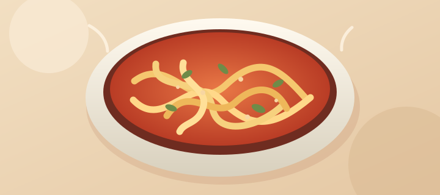

Cooks

RECIPE IDEAQUICK & COMFORTING
Creamy Tomato Pasta
A cozy tomato pasta with garlic, basil, and a silky sauce.

RECIPE IDEAQUICK & COMFORTING
A cozy tomato pasta with garlic, basil, and a silky sauce.